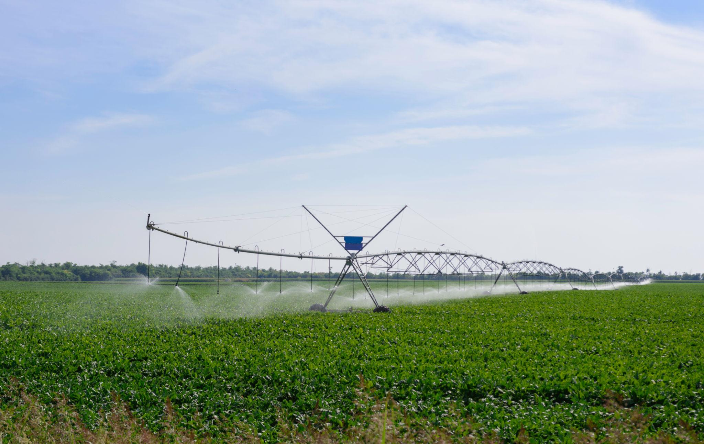

💧Irrigations
Irrigation systems are used to supply water to crops in areas where rainfall is insufficient or irregular. Proper irrigation helps maintain soil moisture, which is essential for healthy plant growth and better crop yield. Irrigation ensures that crops receive water at the right time,improving overall productivity and reducing the risk of crop failure. Modern irrigation methods such as drip irrigation and sprinkler systems are widely used for efficient water management.

🪲Pest Controls
Pest control involves managing insects, weeds, and diseases that damage crops and reduce agricultural productivity. These pests can spread quickly and cause losses if not controlled at the right time. Effective pest management is essential to protect crops, maintain quality, and ensure better yields for farmers. Farmers use a various methods such as biological, chemical, and organic techniques to control pests and diseases, ensuring sustainable farming.

♻️Crop Rotation
Crop rotation is a farming practice where different crops are grown in a specific sequence on the same land over time. Crop rotation helps maintain soil fertility, reduces pests and diseases, and improves overall crop productivity. In long fields, crops are rotated in strips or sections for better management and efficiency. Crop rotation helps in better utilization of soil nutrients, prevents soil degradation, and reduces the dependency on chemical fertilizers.

🌱Soil Testing
Soil testing helps determine the nutrient content and pH level of soil. Soil testing allows farmers to choose the right fertilizers and the crops, leading to better productivity and sustainable farming practices. Soil testing also helps in identifying soil deficiencies early so that corrective measures can be taken in time. By using soil test results, farmers can avoid over-fertilization, reduce costs, and maintain soil health for long-term agricultural productivityand efficient resource management.